How to play
How to read the screens and how a week works.
Video guide
A one-minute video showing everything from the home screen to matches, signings and management (Japanese version).
Getting started
- Phone (Android): menus are portrait and 3D matches switch to landscape by default. Under Settings → "Screen orientation" you can choose portrait or landscape for the menus and for 3D matches separately. Controls are tap, hold and drag.
- PC (Windows): plays in a wide window with mouse clicks. Make the window tall to get the same portrait layout as phones.
- "＜" at the top left goes back one screen. The Android back button and Esc on PC also go back.
- You can have up to 3 save slots. The game saves automatically.
- Language: choose Japanese, English or Traditional Chinese under Settings → "Language".
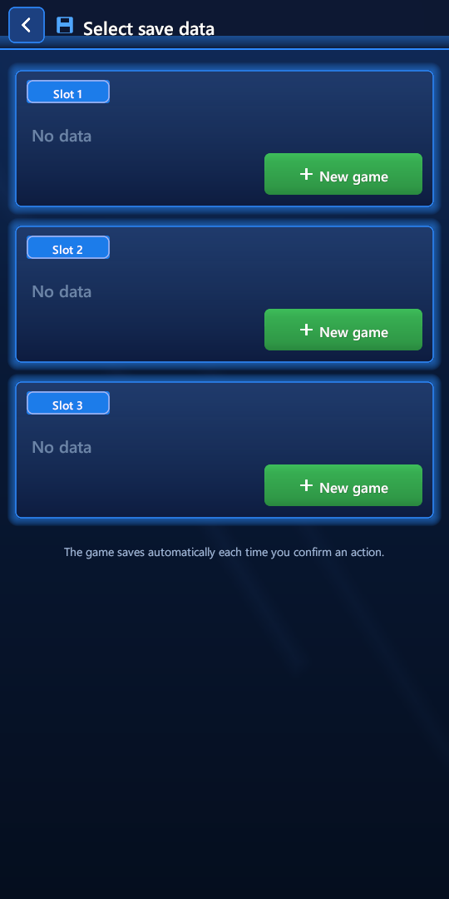
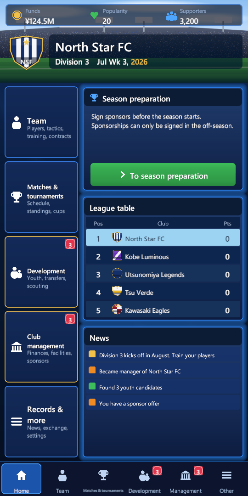
Checklist
What to do first, and what to do every year, month and week. Check here when you're unsure.
First things
- Create your club: choose a club name, short name and emblem.
- Do the season preparation (July): the game starts in July. Sign sponsors and decide whether to hold a camp.
- Set your tactics: Team → Tactics. Start with "Auto" for the lineup and press "Save". Setting auto-sub conditions makes things easier.
- Set training: Team → Training, choose the team training menu.
- Check your staff: Development → Coaches / Scouts. Hire coaches and give scouts positions to search for.
- Look at the youth: Development → Youth, sign this year's candidates ("Join with recollection" lets you grow them further).
- Check Settings: match display (3D / 2D), match speed, screen orientation on phones, language, and text size (Small / Medium / Large).
Every year
- July: season preparation: standings & awards → contract renewals → free transfers → sponsors → camp.
- July: youth candidates: new candidates arrive every year. Sign them as is, or with recollection.
- Jul Wk 1 – Sep Wk 2: summer transfer window: signings and sales only happen in this period. Fill your weak positions.
- July–August: Asian tournament: if you finished in the top 3 of Division 1 or won the domestic cup last season.
- August: league kicks off: the league runs until the next June. The domestic cup runs through the year.
- December: Club World Cup: if you won the Asian tournament. The league pauses meanwhile.
- Feb Wk 1 – Mar Wk 1: winter transfer window: a chance to strengthen mid-season.
- June: end of season: promotion and relegation are decided. Look back on the year in "Season review".
Every month
- Read the monthly report: when the month changes, you get a summary of results and finances.
- Check your money: Club management → Finances / Fixed costs & forecast. Make sure you're not losing money.
- Upgrade facilities: if you have spare funds. Construction takes 4 weeks (8 for the stadium).
- Read scout reports: check players found and prepare for the transfer window.
- Check contracts: Team → Contract renewal. Extend key players early.
On weeks you don't need to watch, "To next month Wk 1" on the home screen advances to the next month at once (matches in between are played automatically without highlights).
Every week
- Training: choose the menu for the attributes you want to grow. Rest tired players individually (up to 3). The "Recommended" mark shows the menu that suits your team right now. You can go straight to the match or the next week from the Training screen.
- Match preparation: check fatigue, form and injuries and adjust the lineup. Check opponent analysis and the Ace Duel in pre-match settings.
- Match: play from "To Match". In 3D you can give instructions at half-time.
- Results & news: check attribute gains and events. Red numbers on the menu show things that need your attention.
Numbers for training and tactics, facility effects and how to choose a camp are on the Guide page.
Home screen
- Top bar: funds, popularity and supporters.
- Under the club name: your league and the date (1 turn = 1 week).
- Large panel on the right: this week's task. "To Match" on match weeks, "Next week" otherwise.
- Menu on the left: open screens from 5 categories (table below). Red numbers show items to check.
- League table & news: your position and recent events.
- Bottom bar: jump to Home and the 5 categories from any screen.
| Menu | Screens inside |
|---|---|
| Team | Player list, tactics & formation, training, contract renewal |
| Matches & tournaments | Schedule, league table, tournaments (domestic cup, Asian tournament, Club World Cup), play a friend's team |
| Development | Youth, transfers, scouts, coaches |
| Club management | Finances, monthly report, sponsors, facility upgrades, stadium, fixed costs & forecast |
| Records & more | News, titles & goals, season review, club history, achievements, team data exchange, settings & save |
How a week works
- Choose training. Team → Training: pick the team menu and players to rest (up to 3).
- Prepare for the match. Team → Tactics: formation, lineup, tactic and auto subs. "Auto" picks them for you.
- Play the match. From "To Match" on the home screen, check the pre-match settings and press "Kick off".
- See the week's results. Match result, attribute gains from training and news are shown. Go on to the next week.

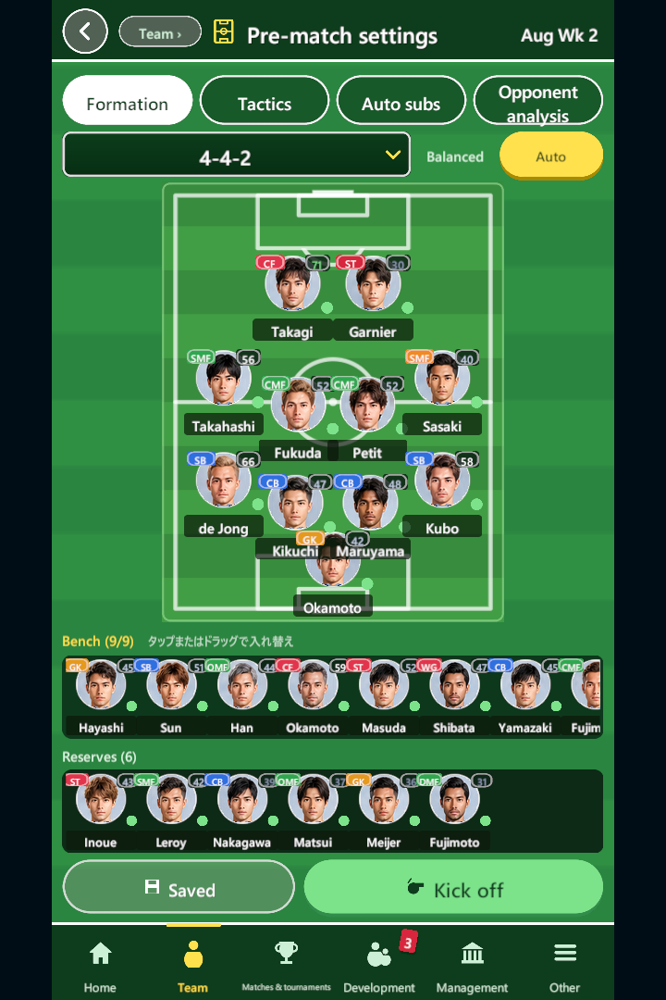

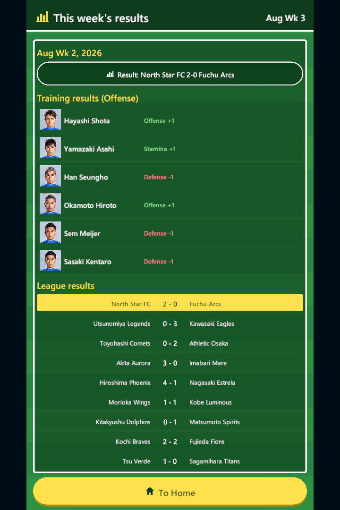
EXP from training raises attributes. Fatigue lowers both training effect and match performance — rest tired players.
When a league match and a cup match fall in the same week, you can change the formation and line-up for the second match after the first one.
Tactics & lineup
- Formation: choose from the top selector (6 formations).
- Swapping players: tap or drag to swap players on the pitch, bench and reserves.
- Player details: hold a player to see attributes and skills.
- Tactic: Attacking, Balanced, Defensive, Counter or Possession.
- Auto subs: set conditions for substitutions when tired, leading or behind.
- Opponent analysis: only in pre-match settings. Check your next opponent's traits.
Press "Save" to keep your changes.
Matches

Pressing "Kick off" lets you choose how to play the match:
- Kick off: watch the match in 3D.
- Result only: skip the match and see the result as 2D highlights.
During a 3D match:
- 2×, 4× and Skip: fast-forward the match.
- Half-time: give tactics, formation and substitution instructions. Drag a player over another to compare them; release to substitute.
- Replays: tap the screen to skip a replay, such as after a goal.
In Settings you can choose the match display: "3D (play the match)" or "2D (highlights)". On phones you can also choose portrait or landscape for 3D matches. You can change these at any time.
Changing player names & photos
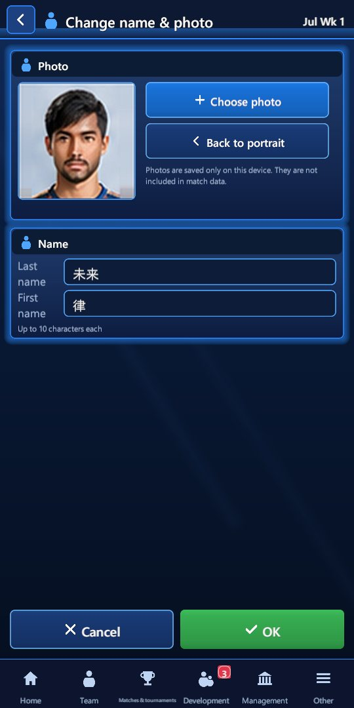
- Open one of your players from Team → Player list.
- Press "Name & photo" at the bottom of the player details.
- "Choose photo" picks a face photo from your phone or PC. "Back to portrait" restores the original face.
- Enter a last and first name (up to 10 characters each) and press "OK".
Photos are saved only on your device. Only names are shared with friends through team data exchange.
Signings & development
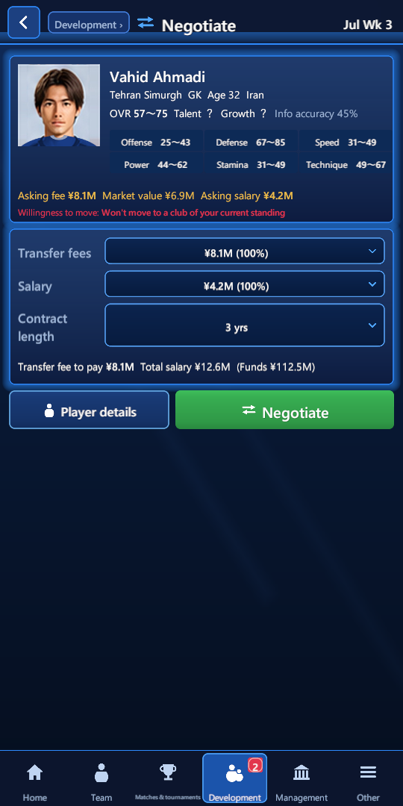
Transfers
Transfers are only possible in summer (Jul Wk 1 – Sep Wk 2) and winter (Feb Wk 1 – Mar Wk 1). Find players under Development → Transfers and make an offer via "Negotiate", setting the fee, salary and contract length.
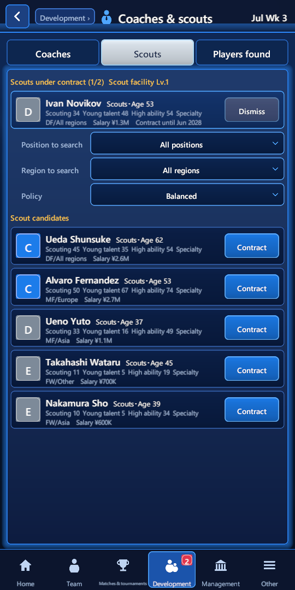
Scouts
Scouts find players at other clubs. You can assign positions and regions to search. The more a scout has checked a player, the more accurately you know their attributes and skills.
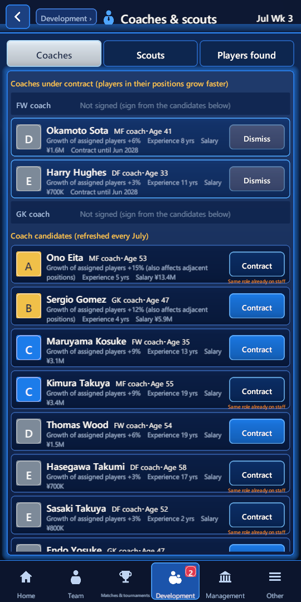
Coaches
Hire FW, MF, DF and GK coaches to make players in those positions grow faster. Contracts can be extended in their final year.
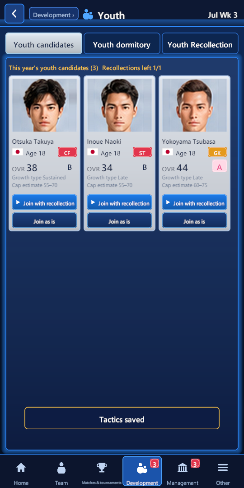
Youth
Sign youth candidates. "Join with recollection" starts the "Youth Recollection" mini game, looking back on ages 15–18 to grow attributes and skills.
On the player detail and negotiation screens, swipe left or right to move to the previous or next player in the list you opened. In the Season Review, swipe to move between years.
Club management
- Income: sponsor money, ticket income (home matches), league and tournament prizes.
- Expenses: player and staff salaries, facility costs, etc.
- Sponsors: contracts can only be signed during the season preparation (July).
- Facilities: upgrading the training ground, stadium and others improves development and income. Construction takes time.

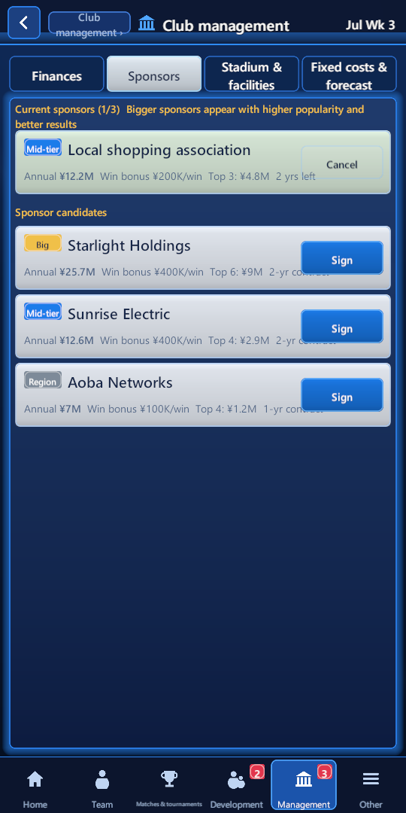
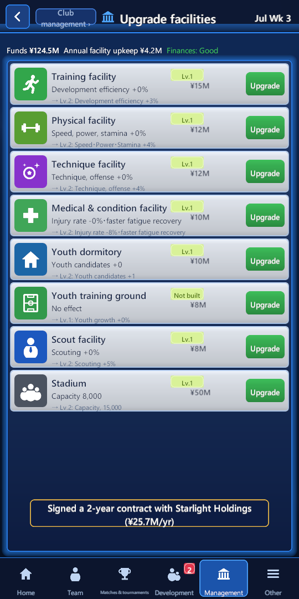
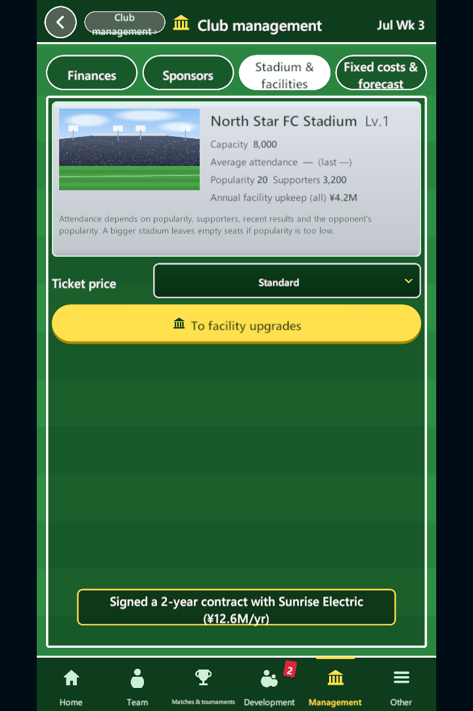
If funds run out you can't make signings. Avoid losing money season after season.
Guide
The systems and numbers behind training and fatigue, growth types, tactics, skills, facilities and camps are on the Guide page.
Season preparation (July)
The league opens in August and closes the following June. July is season preparation, done in this order:
- Standings & awards: look back on last season.
- Contract renewals: renew or release players whose contracts are ending.
- Free transfers: negotiate with players without a club.
- Sponsors: sign sponsorship deals.
- Camp: choose a location and theme to raise attribute caps (optional).
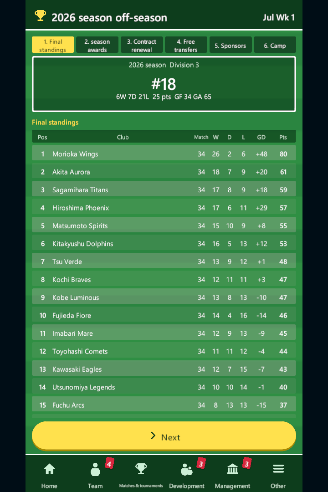
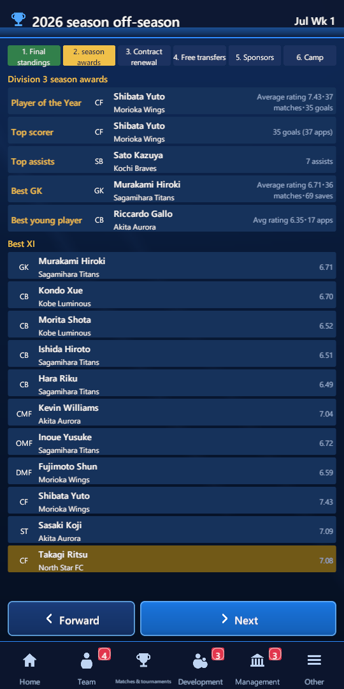
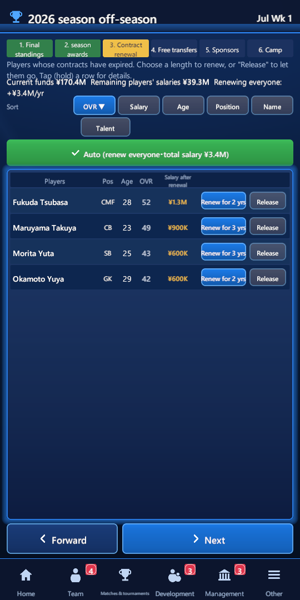
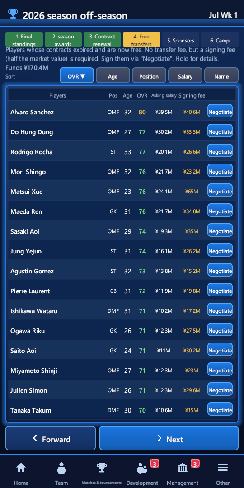
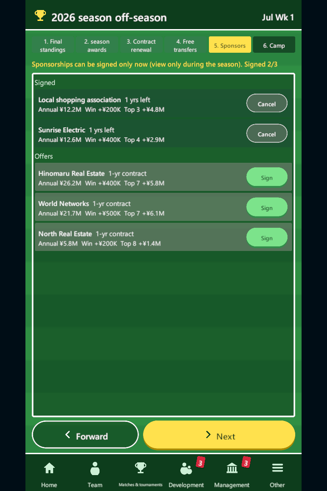